INDIAN LEGENDS
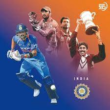
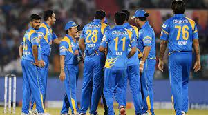
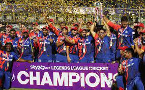
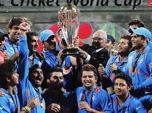
Indian cricket legends have been instrumental in not only making the cricketing history richer but have also inspired the generations to take up this sport. It is courtesy of the efforts of such cricket legends of India that the ‘Men in Blue' are now recognized as the world-beaters. The progress of cricket in India can be attributed to some significant events but none greater than the win against West Indies at Lord's in 1983. Not only did the World Cup win give India global recognition, but also made us acknowledge some of the greatest Indian cricketers of all time who would rule the world in the times to follow.
MS DHONI
The small-town boy, Mahendra Singh Dhoni took the world by surprise on the back of his profound batting skills. He debuted for the Indian cricket team against Kenya in 2003. Eventually, MS Dhoni broke into the 2003 World Cup squad. He holds an impeccable record of smashing most centuries at No.7. With 332 international matches as captain, Dhoni is currently the most successful captain in the history of Indian cricket.
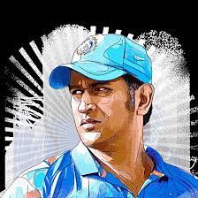
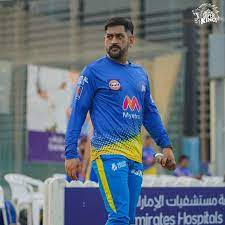
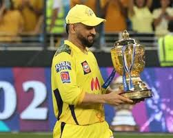
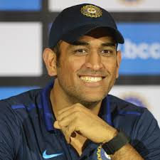
VIRAT
Virat Kohli is an Indian international cricketer and former captain of the India national cricket team. Widely regarded as one of the greatest batsmen of all time, Kohli plays as a right-handed batsman for Royal Challengers Bangalore in the Indian Premier League and for Delhi in domestic Indian cricket.
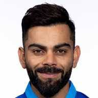
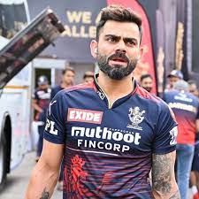
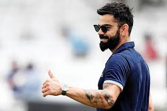
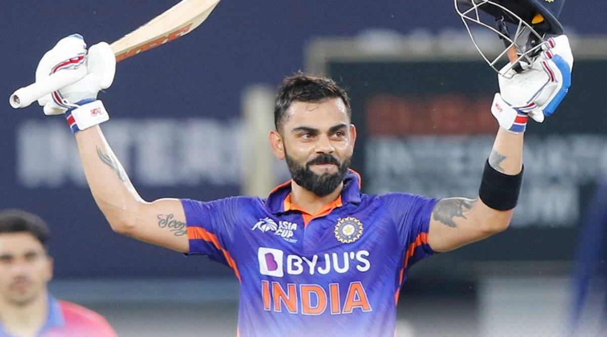
ROHITH
Indian skipper Rohit Sharma had missed the opening Test match of the two-game series against Bangladesh in Chattogram owing to a thumb injury he had incurred during the ODI series that preceded it. Reports now claim that Rohit is likely to return to Bangladesh for the second Test, to be played in Mirpur starting December 22. But his return is likely to create a massive selection headache especially after stunning centuries from Shubman Gill and Cheteshwar Pujara. When asked who would sit out if Rohit returned, former India cricketer Ajay Jadeja gave a stunning reply.

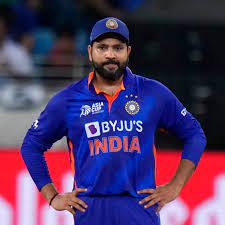
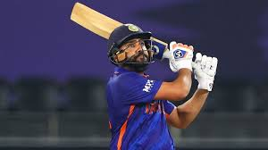
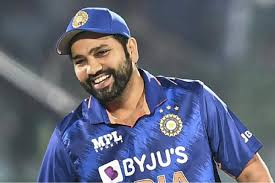
YUVARAJ SINGH
Yuvraj made his first-class debut in late-1997 against Orissa during the 1997–98 Ranji Trophy but was dismissed for a duck opening the innings.[19] His first break-out performance came in the Under-19 Cooch Behar Trophy Final of 1999 against Bihar at Jamshedpur; Bihar were all out with a score of 357 and Yuvraj batted at three for Punjab and made 358 runs himself.[20] Yuvraj represented India in the series against Sri Lanka Under-19s in India in February 1999. In the third ODI, Yuvraj scored 89 runs from 55 balls.[21] In 1999-2000 Ranji Trophy, he scored 149 against Haryana.[22]
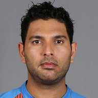
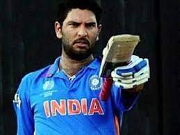
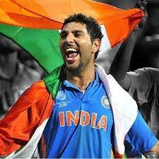